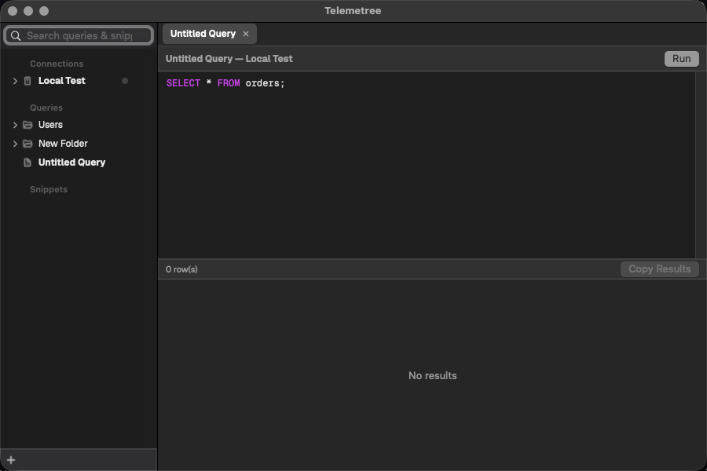
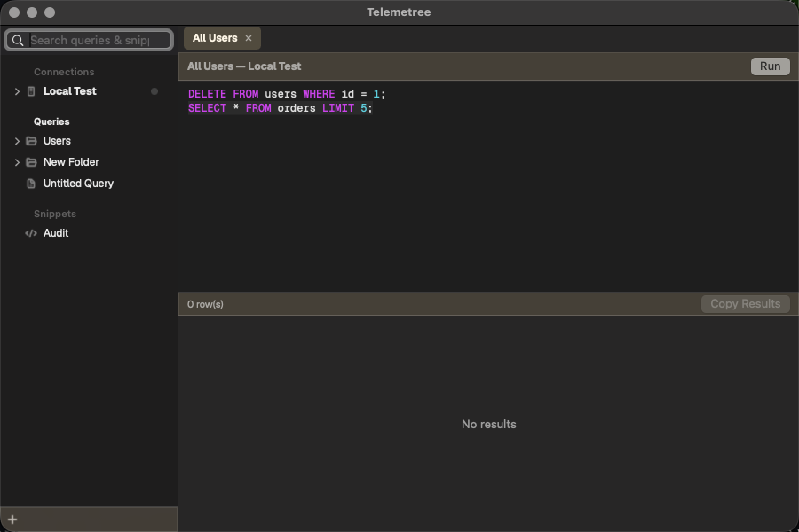
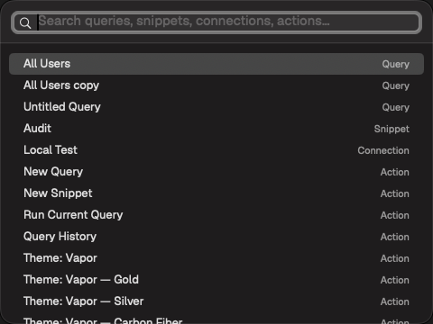
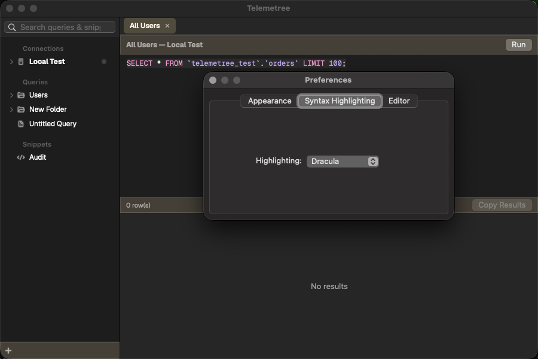
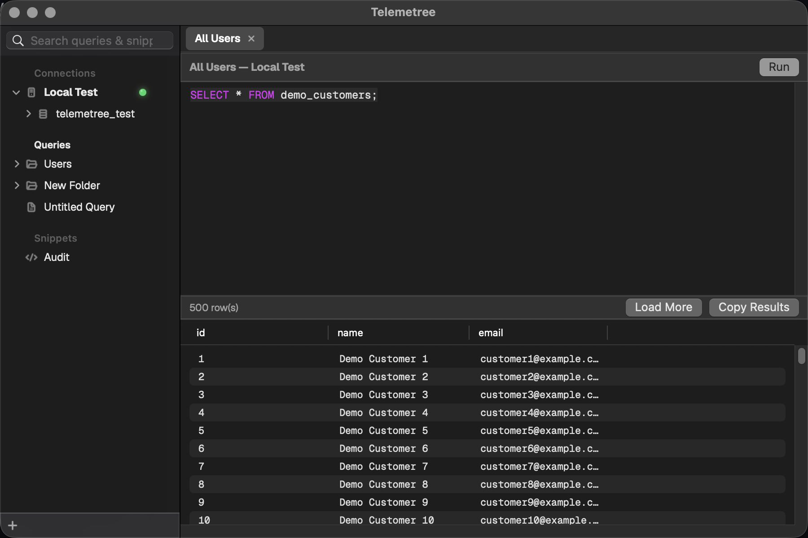
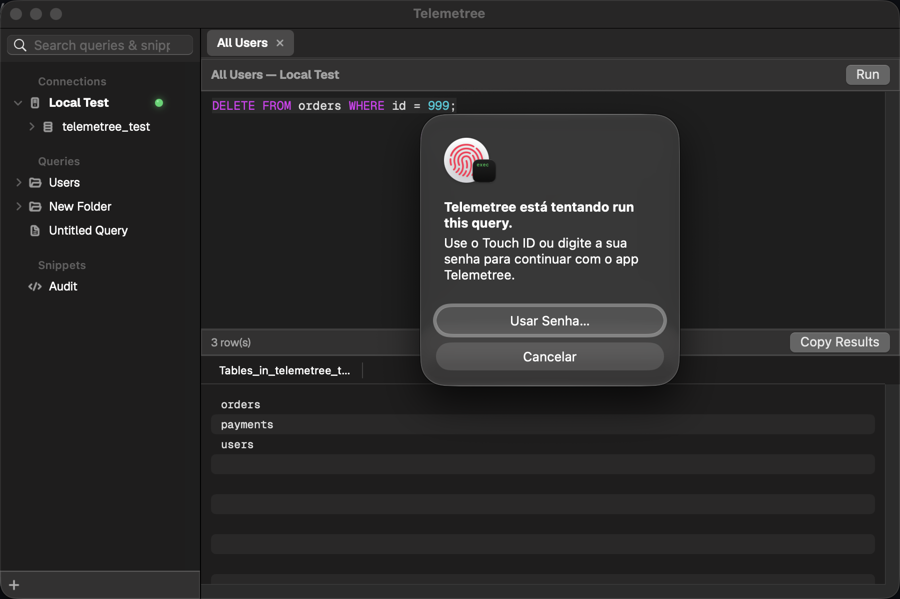
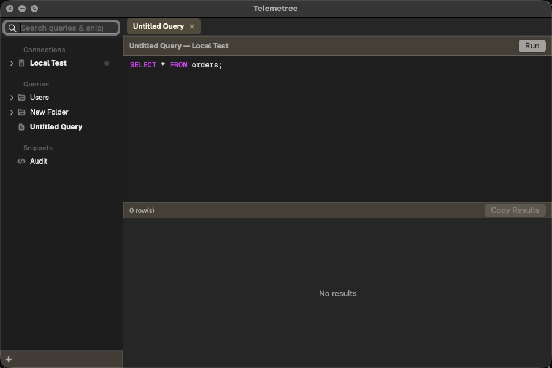
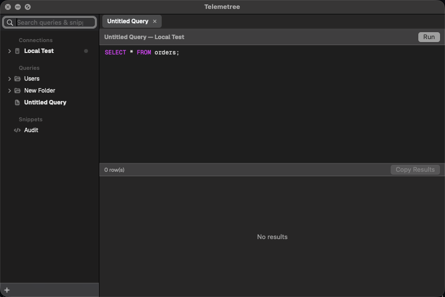
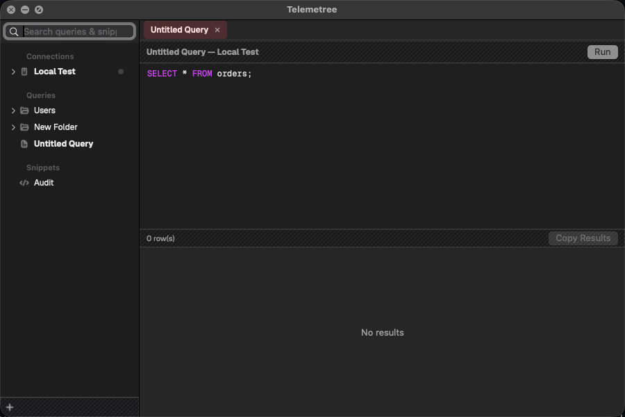

Telemetree is a fast, keyboard-first native macOS SQL client for MySQL, PostgreSQL and SQLite — Swift and AppKit, not Electron. Built around persistent query documents and a snippet library, instead of the disposable tabs most SQL clients give you.
brew tap felipepkgs/telemetree && brew install --cask telemetree

Features
No vaporware — this is what runs today, from the app's own milestone spec.
Named queries organized in folders in the sidebar, autosaved as you type — the way a code editor treats files, not the way a SQL client treats tabs.
Reusable SQL snippets in their own folder tree — create, edit, insert into the current query, with hover-to-delete and confirmation before anything's removed.
Keyword-level SQL highlighting plus a custom completion popup — keywords, real table names after FROM/JOIN/etc., and real column names (scoped to the tables the current statement references) everywhere else, all correct case. Only Tab ever accepts a suggestion.
⌘⇧P jumps straight to any query, snippet, connection, or action — arrow keys and return, no mouse required.
Every executed query is logged — connection, timestamp, success or failure — searchable, capped at 500 entries, double-click to reopen.
DELETE, DROP, TRUNCATE, and every UPDATE — WHERE clause or not — require Touch ID before they run.
App theme, syntax highlighting theme, and editor font/size — four highlighting palettes, three font choices, applied live everywhere text renders, results grid included.
A plain, un-LIMITed SELECT pages in 100 rows at a time with numbered page navigation ("1-100 of 10,000"), instead of pulling an entire result set into memory.
Passwords never touch disk in plaintext. No account, no cloud, nothing phones home — just this app and your database.
In practice
The two features that get used every session: everything's one keystroke away, and a bad query gets caught before it runs.





Appearance
Vapor is the default theme — a dark glass panel with a pulsing connection-status dot. Gold, Silver and Carbon Fiber restyle the same chrome with a different accent, each carrying its own dot gradient through the toolbar, status bar, and active tab.

Warm gold fill and glow, carried into the tab pill and status dot.

Cool, neutral metal fill for a quieter default.

A real woven diagonal texture in the bars, with a red accent identity.
Switch themes from the Theme menu, or via the command palette — Theme: Vapor, — Gold, — Silver, — Carbon Fiber.
Where it stands
This is a personal project, built and used against real MySQL, PostgreSQL, and SQLite databases. Releases are ad-hoc signed, not notarized — Gatekeeper will still flag the first launch.
USE, so that's handled honestly instead of papered over)FROM/JOIN; real column names scoped to the statement's tables once a FROM exists; and, before one exists, qualified table.column suggestions across every known table — accepting one inserts the column and appends the matching FROM clause for you, cursor left exactly where you were typing. Tab-only accept.USE, so unqualified table names resolve without db.table qualificationbrew install --cask telemetree, or a zip on GitHub Releases (ad-hoc signed, not notarized)